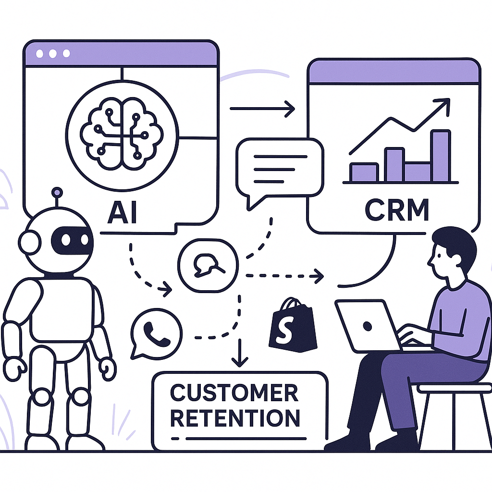
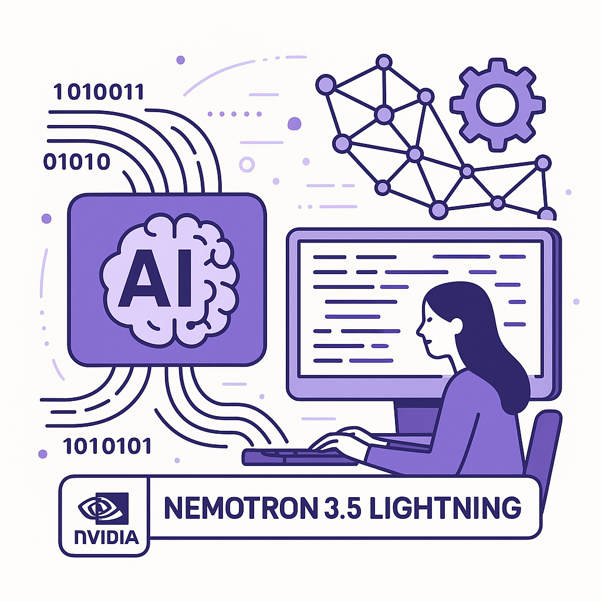
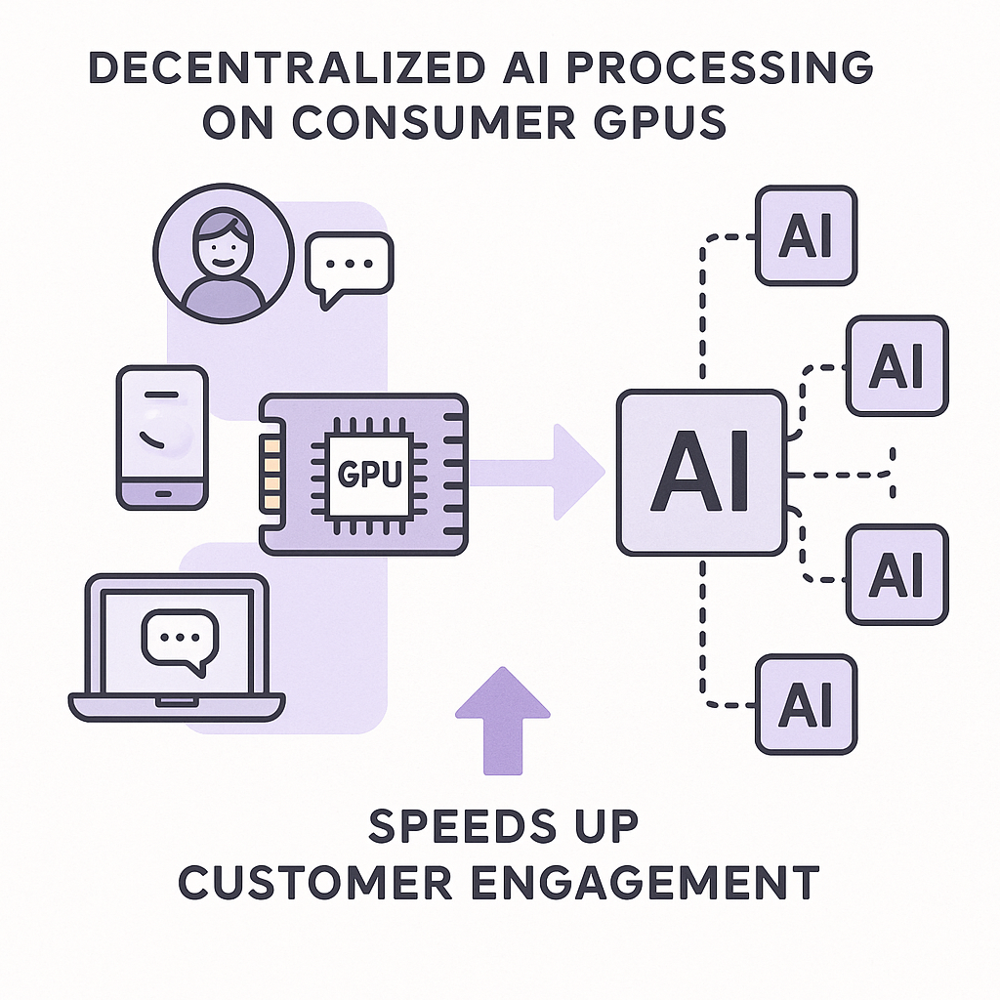
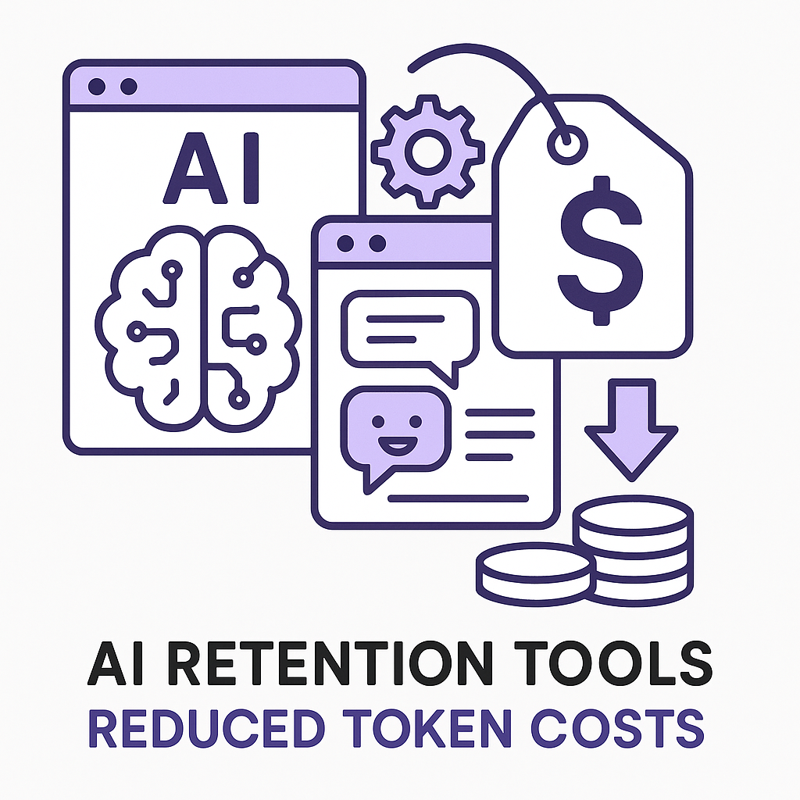

Publishing Recommendation
reviseSeveral posts lack depth and seem overly promotional without sufficient support for claims. Some drafts also risk sounding AI-generated or use excessive jargon, which needs to be toned down for clarity and alignment with our brand voice.
Today's drafts show a strong focus on AI's integration into business operations, but the content often veers into promotional territory. We need to refine the messaging to ensure it provides practical insights and reflects our brand's voice more accurately. The posts should clearly demonstrate the mechanisms behind AI's impact, rather than just asserting benefits without evidence.
LinkedIn Posts (10)
1. Salesforce's Slackbot AI Agent and AI-driven Retention Marketing ★ Purands solution · high priority
CTA: How do you see AI transforming your customer engagement strategies?

⬇ Download image{kind=link}
Image prompt · isometric-flat
Caption: AI agents enhancing CRM retention marketing.
Alternative hooks
- Salesforce's Slackbot AI agent is more than a tool - it's a shift.
- Seeing AI in action: Salesforce's Slackbot and Purands' CRM integrations.
- The AI battle heats up with Salesforce's new Slackbot.
Research behind this post (sources, summaries & confidence)
Salesforce rolls out new Slackbot AI agent as it battles Microsoft and Google in workplace AI conf 0.80 · AI in business
Salesforce's introduction of a new Slackbot AI agent represents the increasing integration of AI in workplace productivity tools. This development could enhance CRM systems and customer engagement, relevant for retention marketing.
Sources & what I took from each
- Salesforce introduced a new Slackbot AI agent.: Reported by VentureBeat regarding Salesforce's competitive AI strategy. ↗ read source
Recent news
- Salesforce's new AI Slackbot is part of its strategy to compete in workplace AI.
Original trend links
Risks / caveats
- Adoption challenges among businesses.
- Competition with established players like Microsoft and Google.
2. Listen Labs raises $69M after viral billboard hiring stunt to scale AI customer interviews ★ Purands solution · high priority
CTA: How do you see AI-driven insights shaping the future of customer engagement?
Alternative hooks
- Listen Labs just secured $69 million, but what does it mean for retention marketing?
- A $69M boost for AI customer insights: Here's how Purands fits into the picture.
- Venture funding highlights AI's role in customer engagement: Let's talk specifics.
Research behind this post (sources, summaries & confidence)
Listen Labs raises $69M after viral billboard hiring stunt to scale AI customer interviews conf 0.80 · AI startups
Listen Labs' significant funding round highlights the growing market for AI-driven customer insights, which can be critical for refining retention marketing strategies and customer engagement.
Sources & what I took from each
- Listen Labs raised $69M to expand AI customer interviews.: VentureBeat reports on the funding round and its implications for AI-driven customer insights. ↗ read source
Statistics
- $69 million raised in funding round.
Recent news
- Listen Labs' funding highlights interest in AI-driven insights.
Original trend links
Risks / caveats
- Challenges in scaling AI customer interviews.
- Market competition from similar AI startups.
3. NVIDIA AI Releases Nemotron 3.5 Lightning ★ Purands solution · high priority
CTA: How do you see AI efficiency shaping the future of customer retention?

⬇ Download image{kind=link}
Image prompt · isometric-flat
Caption: Leveraging NVIDIA's Nemotron 3.5 for smarter AI.
Alternative hooks
- NVIDIA's Nemotron 3.5 Lightning: a game-changer for AI efficiency.
- What does NVIDIA's latest AI model mean for customer retention?
- Nemotron 3.5 Lightning is here. Here's how it affects your marketing.
Research behind this post (sources, summaries & confidence)
NVIDIA AI Releases Nemotron 3.5 Lightning conf 0.80 · AI startups
NVIDIA's release of Nemotron 3.5 Lightning reflects the ongoing advancements in AI model efficiency and capabilities, which could enhance AI applications in retention marketing by improving customer interaction processes.
Sources & what I took from each
- NVIDIA released Nemotron 3.5 Lightning.: MarkTechPost reports on NVIDIA's advancements in AI model technology. ↗ read source
Original trend links
Risks / caveats
- Technical challenges in implementing new AI models.
- Market competition in AI model development.
4. Meta Muse Glimmer brings local AI agents to consumer GPUs ★ Purands solution · high priority
CTA: How do you see decentralized AI impacting your customer engagement strategies?

⬇ Download image{kind=link}
Image prompt · isometric-flat
Caption: Decentralized AI for faster customer engagement.
Alternative hooks
- What if your AI could run right on your customer's device?
- Local AI processing is about to change retention marketing.
- Decentralized AI isn't just a trend, it's the future of customer engagement.
Research behind this post (sources, summaries & confidence)
Meta Muse Glimmer brings local AI agents to consumer GPUs conf 0.70 · AI startups
Meta's release of Muse Glimmer for local AI agents on consumer GPUs indicates a trend towards decentralized AI processing. This advancement could lead to more efficient customer data management and engagement in retention marketing.
Sources & what I took from each
- Meta released Muse Glimmer for local AI processing.: Reported by AI News as a significant development in AI technology. ↗ read source
Original trend links
Risks / caveats
- Technical challenges in implementation.
- Market adoption may vary.
5. Fabletics plans to triple its international footprint ★ Purands solution · high priority
CTA: How do you think AI can reshape global retail strategies?
Alternative hooks
- Fabletics is set to triple its international presence.
- International expansion poses unique challenges.
- Scaling globally requires more than just opening new stores.
Research behind this post (sources, summaries & confidence)
Fabletics plans to triple its international footprint conf 0.70 · Shopify ecosystem
Fabletics' expansion plan could leverage Shopify's ecosystem, impacting how brands manage global e-commerce and customer retention across different markets.
Sources & what I took from each
- Fabletics plans to triple its international presence.: Retail Dive reports on Fabletics' strategic expansion efforts. ↗ read source
Original trend links
Risks / caveats
- Challenges in international market adaptation.
- Potential logistical and supply chain issues.
6. Okta targets AI agent token costs with MCP scoping ★ Purands solution · high priority
CTA: How could reduced AI token costs impact your retention strategies?

⬇ Download image{kind=link}
Image prompt · isometric-flat
Caption: Making AI retention tools more affordable.
Alternative hooks
- AI token costs can be a barrier for many businesses.
- Okta's move to cut AI token costs could reshape retention marketing.
- Imagine AI-driven solutions being more affordable than ever.
Research behind this post (sources, summaries & confidence)
Okta targets AI agent token costs with MCP scoping conf 0.70 · AI industry
Okta's strategy to reduce AI agent token costs could make AI-powered solutions more accessible and cost-effective, impacting the adoption of AI-driven retention marketing tools.
Sources & what I took from each
- Okta is working to reduce AI agent token costs.: AI News reports on Okta's strategic focus on cost efficiency. ↗ read source
Original trend links
- https://www.artificialintelligence-news.com/news/okta-targets-ai-agent-token-costs-with-mcp-scoping/
Risks / caveats
- Potential technological hurdles in cost reduction.
- Market competition and pricing pressures.
7. Crocs inks AI tech deal ★ Purands solution · high priority
CTA: How do you see AI transforming retail operations in the next few years?
Alternative hooks
- Crocs bets big on AI to modernize its operations.
- Retail brands are turning to AI to boost efficiency and retention.
- AI in retail isn't just a trend; it's a strategy.
Research behind this post (sources, summaries & confidence)
Crocs inks AI tech deal conf 0.60 · AI in business
Crocs' AI technology deal aims to modernize business operations, potentially influencing how brands use AI to improve customer retention and streamline marketing efforts.
Sources & what I took from each
- Crocs has entered into an AI technology deal.: Retail Dive reports on Crocs' efforts to modernize operations through AI. ↗ read source
Original trend links
Risks / caveats
- Effectiveness of AI integration in retail operations.
- Potential resistance to change within the company.
8. Stripe Clinches over $7B Deal to Buy AI Firm OpenRouter
CTA: How do you see AI gateways impacting business operations in the next few years?
Alternative hooks
- Stripe just spent over $7 billion on a major AI move. Here's why.
- When a payment giant invests billions in AI, you take notice.
- Stripe's $7B bet on AI is about more than just payments.
Research behind this post (sources, summaries & confidence)
Stripe Clinches over $7B Deal to Buy AI Firm OpenRouter conf 0.90 · AI startups
Stripe's acquisition of OpenRouter for over $7 billion underscores the growing importance of AI gateways in business operations. This move indicates a significant investment in AI infrastructure, potentially affecting the payments and AI sectors broadly, including retention marketing platforms.
Sources & what I took from each
- Stripe is acquiring OpenRouter for over $7 billion.: Multiple reputable sources such as TechCrunch and Bloomberg report on the acquisition. ↗ read source
Statistics
- Acquisition valued at over $7 billion.
Recent news
- Stripe's acquisition of OpenRouter is seen as a move to bolster its AI capabilities.
Original trend links
- https://techcrunch.com/2026/08/16/stripe-will-reportedly-acquire-ai-gateway-startup-openrouter-for-7b/
- https://www.bloomberg.com/news/articles/2026-08-16/stripe-nears-deal-to-buy-ai-firm-openrouter-for-over-7-billion
Risks / caveats
- Potential integration challenges between Stripe and OpenRouter.
- Market competition and regulatory scrutiny.
9. Samsung health AI models analyse wearable biosignal data
CTA: How do you see wearable tech evolving with AI advancements?
Alternative hooks
- Samsung's AI is making waves in health tech.
- What if your wearable could do more than count steps?
- Integrating AI with health data is changing the game.
Research behind this post (sources, summaries & confidence)
Samsung health AI models analyse wearable biosignal data conf 0.80 · AI in business
Samsung's health AI models offer insights into how wearable technology can enhance customer data platforms, providing opportunities for personalized health and wellness engagement in retention marketing.
Sources & what I took from each
- Samsung's AI models analyze wearable biosignal data.: AI News reports on Samsung's advancements in health tech AI. ↗ read source
Original trend links
Risks / caveats
- Privacy concerns regarding biosignal data.
- Technical challenges in data integration.
10. Google AI health coach to use Abbott glucose data
CTA: How do you see AI impacting personalized health coaching in the next few years?
Alternative hooks
- Google's latest AI health initiative is more than just a tech story.
- What if your health coach knew your glucose levels in real-time?
- The future of personalized health coaching just got a boost.
Research behind this post (sources, summaries & confidence)
Google AI health coach to use Abbott glucose data conf 0.80 · AI in business
The collaboration between Google and Abbott to integrate glucose data into AI health coaching tools highlights the potential for AI to personalize consumer health experiences, relevant to retention strategies.
Sources & what I took from each
- Google partners with Abbott for AI health coaching.: Reported by AI News, detailing the integration of glucose data for personalized experiences. ↗ read source
Original trend links
Risks / caveats
- Data privacy and security concerns.
- Regulatory challenges in health data integration.
Today's Trends
| # | Trend | Category | Why it matters |
|---|---|---|---|
| 1 | Stripe Clinches over $7B Deal to Buy AI Firm OpenRouter
source source |
AI startups | Stripe's acquisition of OpenRouter for over $7 billion underscores the growing importance of AI gateways in business operations. This move indicates a significant investment in AI infrastructure, potentially affecting the payments and AI sectors broadly, including retention marketing platforms. |
| 2 | Talks to sell PayPal to Stripe and Advent are heating up
source |
AI industry | The potential sale of PayPal to Stripe and Advent could reshape the fintech landscape, impacting payment processing, CRM, and loyalty programs. The deal's outcome could have significant implications for retention marketing strategies. |
| 3 | Salesforce rolls out new Slackbot AI agent as it battles Microsoft and Google in workplace AI
source |
AI in business | Salesforce's introduction of a new Slackbot AI agent represents the increasing integration of AI in workplace productivity tools. This development could enhance CRM systems and customer engagement, relevant for retention marketing. |
| 4 | Consumers warm up to agentic AI purchases
source |
AI in business | The increasing consumer acceptance of agentic AI for purchases highlights a shift in consumer behavior and technology adoption. This trend is pivotal for retention marketing strategies focused on personalized experiences. |
| 5 | Meta Muse Glimmer brings local AI agents to consumer GPUs
source |
AI startups | Meta's release of Muse Glimmer for local AI agents on consumer GPUs indicates a trend towards decentralized AI processing. This advancement could lead to more efficient customer data management and engagement in retention marketing. |
| 6 | Crocs inks AI tech deal
source |
AI in business | Crocs' AI technology deal aims to modernize business operations, potentially influencing how brands use AI to improve customer retention and streamline marketing efforts. |
| 7 | Listen Labs raises $69M after viral billboard hiring stunt to scale AI customer interviews
source |
AI startups | Listen Labs' significant funding round highlights the growing market for AI-driven customer insights, which can be critical for refining retention marketing strategies and customer engagement. |
| 8 | Fabletics plans to triple its international footprint
source |
Shopify ecosystem | Fabletics' expansion plan could leverage Shopify's ecosystem, impacting how brands manage global e-commerce and customer retention across different markets. |
| 9 | Samsung health AI models analyse wearable biosignal data
source |
AI in business | Samsung's health AI models offer insights into how wearable technology can enhance customer data platforms, providing opportunities for personalized health and wellness engagement in retention marketing. |
| 10 | Google AI health coach to use Abbott glucose data
source |
AI in business | The collaboration between Google and Abbott to integrate glucose data into AI health coaching tools highlights the potential for AI to personalize consumer health experiences, relevant to retention strategies. |
| 11 | Okta targets AI agent token costs with MCP scoping
source |
AI industry | Okta's strategy to reduce AI agent token costs could make AI-powered solutions more accessible and cost-effective, impacting the adoption of AI-driven retention marketing tools. |
| 12 | Google tests AMIE for clinical video consultations
source |
AI in business | Google's testing of AMIE for clinical video consultations represents a significant step in integrating AI into telemedicine, offering new avenues for customer engagement in health-related fields. |
| 13 | The limits of physics AI: where Siemens says the human stays in charge
source |
AI industry | Siemens' stance on the role of human oversight in AI-driven physics simulations underscores the ongoing debate about AI's role in business processes, relevant to AI's application in marketing and operations. |
| 14 | NVIDIA AI Releases Nemotron 3.5 Lightning
source |
AI startups | NVIDIA's release of Nemotron 3.5 Lightning reflects the ongoing advancements in AI model efficiency and capabilities, which could enhance AI applications in retention marketing by improving customer interaction processes. |
Risk Assessment
- Tone risk: Some posts contain hype without substantiation, risking a loss of credibility.
- Factual risk: Overemphasis on AI capabilities without enough evidence could mislead readers.
- Brand risk: Some drafts sound too promotional, which may not align with Purands AI's practical and insightful tone.
Suggested LinkedIn Comments (30)
Open each post, then paste the copied comment. Nothing is posted automatically.
1. opinion · rss:techcrunch.com — OpenRouter's CEO recently described the startup as Stripe for AI.
Post by: rss:techcrunch.com
Why it works: It provides a concrete comparison and sets a realistic expectation based on Stripe's success.
↗ Open LinkedIn post to paste comment2. insight · rss:techcrunch.com — On the latest episode of Equity podcast, we discuss why not everyone is buying Z
Post by: rss:techcrunch.com
Why it works: It acknowledges the skepticism and adds a specific challenge that needs addressing.
↗ Open LinkedIn post to paste comment3. insight · rss:techcrunch.com — Dario Amodei is pushing back against the idea that he's been painting an overly
Post by: rss:techcrunch.com
Why it works: It provides a balanced perspective, encouraging a nuanced conversation about AI risks.
↗ Open LinkedIn post to paste comment4. expansion · rss:techcrunch.com — Welcome back to TechCrunch Mobility — your central hub for news and insights on
Post by: rss:techcrunch.com
Why it works: It broadens the conversation to include non-tech factors essential for future mobility.
↗ Open LinkedIn post to paste comment5. opinion · rss:techcrunch.com — The woman claimed that AI tools are "taking everyday life and turning it into ch
Post by: rss:techcrunch.com
Why it works: It addresses a serious concern and calls for a collective industry response.
↗ Open LinkedIn post to paste comment6. insight · rss:techcrunch.com — How will the watermarking actually work? Can it be hidden with editing? And how
Post by: rss:techcrunch.com
Why it works: It highlights the ongoing challenge and the need for continuous advancement.
↗ Open LinkedIn post to paste comment7. expansion · rss:techcrunch.com — AI coding startup Cursor is now officially a part of SpaceX.
Post by: rss:techcrunch.com
Why it works: It explores the broader implications of the acquisition for the aerospace sector.
↗ Open LinkedIn post to paste comment8. insight · rss:techcrunch.com — A guide on how to check if hackers have broken into your accounts on the most po
Post by: rss:techcrunch.com
Why it works: It emphasizes the importance of vigilance and proactive security in the context of AI.
↗ Open LinkedIn post to paste comment9. insight · rss:techcrunch.com — Fusion startups have raised $7.1 billion to date, with the majority of it going
Post by: rss:techcrunch.com
Why it works: It raises a critical point about the implications of funding concentration in innovation.
↗ Open LinkedIn post to paste comment10. expansion · rss:techcrunch.com — PayPal is still reportedly negotiating a potential sale to Stripe and private eq
Post by: rss:techcrunch.com
Why it works: It contextualizes the news within broader industry trends, adding depth to the discussion.
↗ Open LinkedIn post to paste comment11. respectful challenge · rss:www.theverge.com — According to the Financial Times, OpenAI disbanded its preparedness team at the
Post by: rss:www.theverge.com
Why it works: It questions a decision that could impact AI safety, aligning with concerns many in the industry might share.
↗ Open LinkedIn post to paste comment12. insight · rss:www.theverge.com — "Breakups are… tough." It's the opening lines of an interlude towards the end of
Post by: rss:www.theverge.com
Why it works: It appreciates the artist's storytelling while highlighting the universal appeal of personal narratives.
↗ Open LinkedIn post to paste comment13. opinion · rss:www.theverge.com — On Friday, Amazon customers received an email alerting them to an update to the
Post by: rss:www.theverge.com
Why it works: It presents a critical view on company-consumer power dynamics, a relevant concern for many users.
↗ Open LinkedIn post to paste comment14. insight · rss:www.theverge.com — ChatGPT's desktop app on macOS has a new feature called Computer History that tu
Post by: rss:www.theverge.com
Why it works: It acknowledges the feature's benefits while addressing a common concern about privacy, balancing enthusiasm with caution.
↗ Open LinkedIn post to paste comment15. expansion · rss:www.theverge.com — This is The Stepback, a weekly newsletter breaking down one essential story from
Post by: rss:www.theverge.com
Why it works: It supports continuous dialogue on AI safety, aligning with the need for proactive engagement in the tech community.
↗ Open LinkedIn post to paste comment16. insight · rss:www.theverge.com — Smartphone cameras are convenient, but they lack the charm of analog instant cam
Post by: rss:www.theverge.com
Why it works: It connects the trend to a broader societal shift, adding depth to a seemingly simple product update.
↗ Open LinkedIn post to paste comment17. opinion · rss:www.theverge.com — At D23, when asked about the potential for a sequel to the cult classic The Simp
Post by: rss:www.theverge.com
Why it works: It connects a specific game to a larger trend of reviving classic content, appealing to both old fans and new players.
↗ Open LinkedIn post to paste comment18. insight · rss:www.theverge.com — Your AI Slop Bores Me is brilliant in its simplicity. There are two tabs: human
Post by: rss:www.theverge.com
Why it works: It underscores the importance of human creativity in AI interactions, a key concern in AI ethics debates.
↗ Open LinkedIn post to paste comment19. insight · rss:www.theverge.com — When I'm asked what to buy if you want to get into making electronic music, I of
Post by: rss:www.theverge.com
Why it works: It highlights the accessibility of music production technology, encouraging new creators to explore their musical interests.
↗ Open LinkedIn post to paste comment20. opinion · rss:www.theverge.com — As if you needed more reason to love Carly Rae Jepsen's "Call Me Maybe" beyond i
Post by: rss:www.theverge.com
Why it works: It validates the podcast's analytical approach, appealing to those who appreciate music beyond surface-level enjoyment.
↗ Open LinkedIn post to paste comment21. insight · rss:feeds.arstechnica.com — Regulations reduced prenatal exposure to harmful emissions, but wildfire smoke i
Post by: rss:feeds.arstechnica.com
Why it works: It connects environmental policy with practical implications, adding depth to the original point.
↗ Open LinkedIn post to paste comment22. insight · rss:feeds.arstechnica.com — Also: <em>Ahsoka</em> S2 teaser, <em>Doomsday</em> trailer, news about MCU's <em
Post by: rss:feeds.arstechnica.com
Why it works: Adds a cultural perspective on the enduring appeal of these franchises, beyond just the news update.
↗ Open LinkedIn post to paste comment23. expansion · rss:feeds.arstechnica.com — "Flamingo missiles were used. A good achievement."
Post by: rss:feeds.arstechnica.com
Why it works: Provides a broader context on the implications of military advancements, deepening the post's impact.
↗ Open LinkedIn post to paste comment24. insight · rss:feeds.arstechnica.com — Utility-scale solar leads by a mile, followed by batteries. Fossil fuels, not so
Post by: rss:feeds.arstechnica.com
Why it works: Highlights the importance of storage in renewable energy, offering a forward-looking perspective on the transition.
↗ Open LinkedIn post to paste comment25. insight · rss:feeds.arstechnica.com — Screen-sharing bug lets remote hackers log in without a password.
Post by: rss:feeds.arstechnica.com
Why it works: Ties the specific issue to a broader trend, reinforcing the importance of cybersecurity in today's work environment.
↗ Open LinkedIn post to paste comment26. opinion · rss:feeds.arstechnica.com — Airline-backed venture aims to develop a hybrid-electric commercial aircraft.
Post by: rss:feeds.arstechnica.com
Why it works: Gives a forward-looking opinion on the potential impact of hybrid-electric aircraft on the industry.
↗ Open LinkedIn post to paste comment27. insight · rss:feeds.arstechnica.com — Judge warns pro se litigants are using chatbots wrong and getting desperate.
Post by: rss:feeds.arstechnica.com
Why it works: Identifies an educational gap in AI use, offering a practical solution to the issue presented.
↗ Open LinkedIn post to paste comment28. insight · rss:feeds.arstechnica.com — Kalshi ordered to stop offering bets in Washington, must implement geofencing.
Post by: rss:feeds.arstechnica.com
Why it works: Connects the specific case to the broader challenge of regulating tech-driven financial services.
↗ Open LinkedIn post to paste comment29. insight · rss:feeds.arstechnica.com — "We don't have access to the data on the hardware/servers," Iron Mountain told A
Post by: rss:feeds.arstechnica.com
Why it works: Adds a layer of importance on data transparency, a crucial aspect often overlooked in data management discussions.
↗ Open LinkedIn post to paste comment30. insight · rss:feeds.arstechnica.com — It turns out that the economics of rocket reuse are pretty, pretty good.
Post by: rss:feeds.arstechnica.com
Why it works: Highlights the broader implications of economic efficiency in rocket technology, suggesting a shift in the space industry landscape.
↗ Open LinkedIn post to paste comment